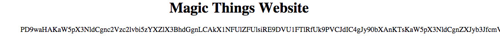
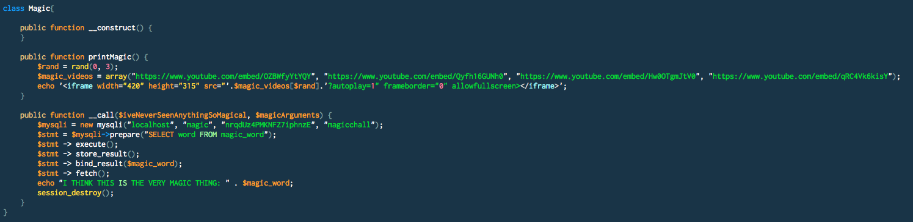
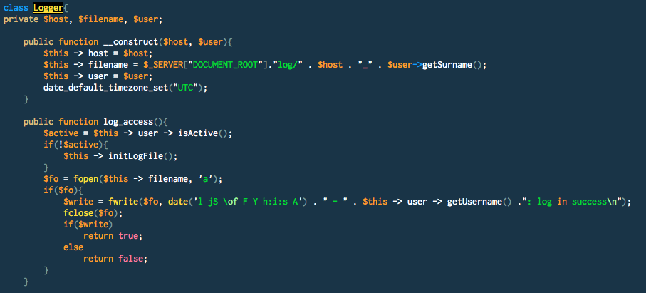
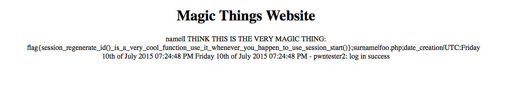

We are presented with a web that allows us to register an account, then log in and be surprised with random disturbing videos xDDD. The web uses a page parameter to reference and include other pages and its vulnerable to LFI. For example, instead of going to http://magic.polictf.it/magic_things.php we can include it in index.php with http://magic.polictf.it/index.php?page=magic_things. So it seems that we can include any file ending in .php since we cannot seem to discard the extension using a null byte.
First thing to try in a php application are the php filters. So we can try to read the source code by using the base64 filter:
http://magic.polictf.it/index.php?page=php://filter/convert.base64-encode/resource=index and voila, the site returns us a base64 version of index.php source code:

From here we procedeed to collect and read all source code and include files. Interesting things:
1 - Running any method on a Magic instance will print the flag:

2 - Log files are written to $_SERVER["DOCUMENT_ROOT"]."log/" . $host . "_" . $user->getSurname() so we can control the extension by setting our Surename to foo.php. Also controlling the user Name, we can inject any arbitrary strings in the log. This smells like remote code execution.

Now, all we need to do is to register a user with Name: <?php (new Magic())->test();?> and surename: foo.php and then visit the log and read the flag:
